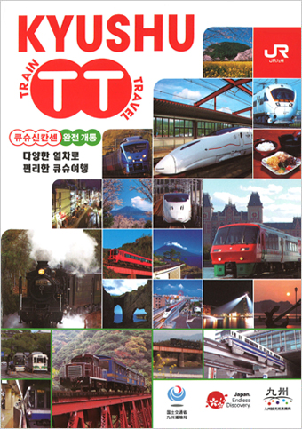

한국과 가장 가까우면서도 이국적인 ‘큐슈’, 매력적인 JR큐슈의 열차로 떠나보는 큐슈여행은 어떤가요?
2011년 3월 12일 완전개통된 큐슈신칸센은 운행되는 가장 먼 거리까지 52분이나 단축되었습니다.
큐슈신칸센을 포함한 큐슈지역의 열차(산요신칸센 제외)를 마음껏 이용할 수 있는 ‘JR큐슈레일패스’는 여러분의 발길을 큐슈 구석구석까지 옮겨줄 것입니다.
이 가이드북은 ‘JR큐슈레일패스’를 이용하는 한국인 여행객을 위해 여행사에서 무료로 배부하고 있습니다.
‘JR큐슈레일패스’의 소개와 사용법부터 열차의 이용, 유명관광지, 맛집 등 빼놓을 수 없는 정보는 물론 여러분에게만 제공되는 각종 특전쿠폰까지 가득한 필수 가이드북입니다.
| 시설명 | 특전내용 | |
| 코쿠라 터미널빌딩㈜ 小倉ターミナルビル(株) |
스테이션호텔 코쿠라 (ステーションホテル小倉) |
숙박요금 20% 할인(현지에서의 예약일 경우), 7층 호텔레스토랑 하치쿠라(八くら), 테라스(テラス) 15％ 할인 |
|---|---|---|
| 아뮤플라자 카고시마 アミュプラザ鹿児島 |
아뮤플라자 카고시마 (アミュプラザ鹿児島) |
관람차 ‘아뮤란(アミュラン)’ 탑승요금 할인 어른500엔→300엔、어린이300엔→100엔 |
| 아뮤플라자 나가사키 アミュプラザ長崎 |
[오미야게·과자점] 오미야게 ‘스미야’ (御土産すみや) |
3,000엔 이상 구매객에게 시제품 증정 |
| [화·양과자점] 분메이토소혼텐 (文明堂総本店) |
상품을 구매객에게 ‘미카사야마(빵 기지에 팥앙금을 넣은 전통화과자)’1개 증정 | |
| [화·양과자점] 쇼오켄 (松翁軒) |
2,000엔 이상 구매객에게 그림엽서 2장 증정 | |
| [화·양과자점] 카호 ‘카라쿠사’ (菓舗 唐草) |
500엔 이상 구매객에게 비파카스타(비파카스타드 크림 케이크) 1개 증정 | |
| [회전초밥점] 사카나야노 카이텐즈시 ‘스시카츠’ (魚屋の回転寿司 すし活) |
서덜탕 한 그릇(大 또는 小) 서비스 (쿠폰 1장당 한 명) | |
| [나가사키짬뽕·사라우동·중화요리점] 칸톤 타이완료리 ‘코죠코’ (広東・台湾料理 皇上皇) |
식사하신 손님에게 음료 1잔 서비스 (쿠폰 1장당 한 명) | |
| [튀김 전문점] 텐푸라 ‘하라다’ (天ぷら はらだ) |
정식 메뉴 10％ 할인 | |
| [햄버그·스테이크 전문점] 브루즈 키친 (ブルズキッチン) |
쿠폰 제시로 10％ 할인 | |
| [인도요리점] 혼바 인도료리 ‘미란’ (本場インド料理 ミラン) |
식사요금 10% 할인 (쿠폰 1장당 한 명) | |
| [라멘점] 하카타쵸텐 (博多ちょうてん) |
라멘 한 그릇당 음료 1잔 서비스 | |
| 하카타 데이토스 博多デイトス |
[화과자점] ‘치도리야혼케’ 하카타 데이토스점 (千鳥屋本家 博多デイトス店) |
치도리만주 1개 증정 |
| [면요리•어묵 전문점] 하카타멘토코로 ‘미네마츠혼케’ 하카타 데이토스점 (博多めん処 峰松本家 博多デイトス) |
식사하신 손님에게 카마보코(蒲鉾)어묵 증정 | |
| [와플 전문점] 카페 잔도 스위트라보 (Café Xando Sweet Labo) |
구매금액 500엔당 샌드와플 1개씩 증정 | |
| [라멘·튀김덮밥점] ‘마루우마’ 하카타데이토스텐 (まるうま博多デイトス店) |
식사요금에서 한 명당 200엔씩 할인 | |
| [사천면요리점] 다이메이탄탄멘 (大明担担麺) |
식사하신 손님에게 아몬드젤리 안닌도후(杏仁豆腐) 서비스 | |
| 제이알큐슈푸드서비스㈜ ジェイアール九州フードサービス(株) |
[일본식선술집] 아카사카 우마야 하카타 (赤坂うまや博多) |
주문하신 손님에게 음료 1잔 서비스 |
| ㈜드러그 일레븐 (株)ドラックイレブン |
드러그일레븐 JR하카타역점 (ドラッグイレブンＪＲ博多駅店) |
계산할 때 큐슈레일패스를 제시하는 손님에게 녹차 500ml 증정 | ㈜토란도르 (株)トランドール |
[베이커리] 토란도르(TRANDOR) 하카타역점 (トランドール博多駅店) |
10％할인 쿠폰 |
| 하우스텐보스제이알젠닛쿠호텔㈜ ハウステンボスジェイアール 全日空ホテル(株) |
하우스텐보스 제이알젠닛쿠호텔 (ハウステンボスジェイアール全日空ホテル) |
레스토랑(로비라운지 ‘카스케이도’, 중화식당‘카린’, 일식당‘운카이’) 식사요금의 10％할인 쇼핑매장 ‘르 봉 마르쉐 들라 포레’ 구매금액의 5%할인 |
| ㈜제이알큐슈도시개발 (株)ジェイアール九州都市開発 |
JR큐슈호텔 코쿠라 (JR九州ホテル小倉) |
호텔 객실요금 15% 할인 |
| JR큐슈호텔 블라섬 후쿠오카 (JR九州ホテルブラッサム福岡) |
||
| JR큐슈호텔 나가사키 (JR九州ホテル長崎) |
||
| JR큐슈호텔 쿠마모토 (JR九州ホテル熊本) |
||
| JR큐슈호텔 카고시마 (JR九州ホテル鹿児島) |
||